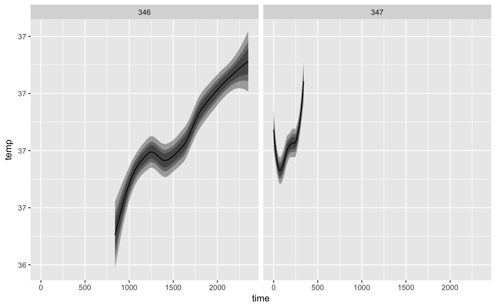
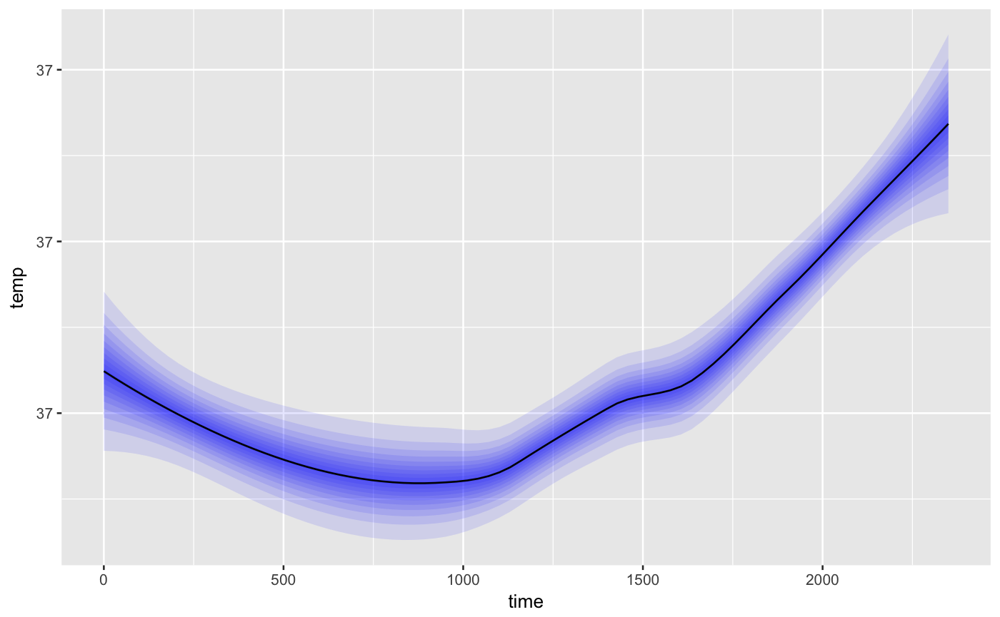
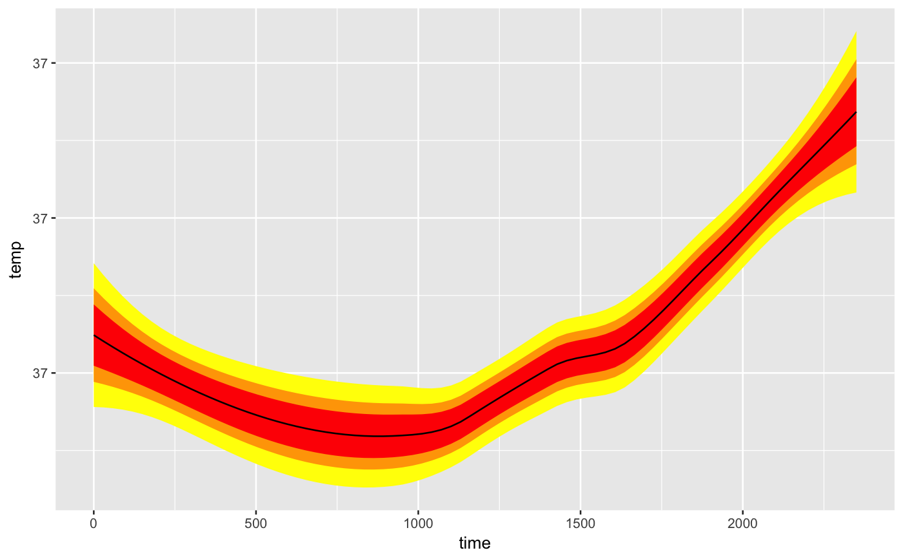

iterate adding ribbons to a ggplot2 plot at varying confidence levels to shade by confidence. Horribly inefficient, because smooth stat is computed every time, but flexible.
geom_shady_smooth(mapping = NULL, data = NULL, stat = "smooth", method = "auto", formula = y ~ x, se = TRUE, position = "identity", na.rm = FALSE, show.legend = NA, inherit.aes = TRUE, levels = c(0.6, 0.8, 0.95), base_alpha = 1, fill_gradient = NULL, fill = "black", ...)
| mapping | Set of aesthetic mappings created by |
|---|---|
| data | The data to be displayed in this layer. There are three options: If A A |
| stat | defaults to smooth |
| method | smoothing method (function) to use, eg. "lm", "glm", "gam", "loess", "rlm". For |
| formula | formula to use in smoothing function, eg. |
| se | display confidence interval around smooth? (TRUE by default, see level to control |
| position | Position adjustment, either as a string, or the result of a call to a position adjustment function. |
| na.rm | If |
| show.legend | logical. Should this layer be included in the legends?
|
| inherit.aes | If |
| levels | the confidence levels that are supposed to be displayed, defaults to 0.6, 0.8, 0.95 |
| base_alpha | divided by length(levels) |
| fill_gradient | a vector of colors that has at least the same length as levels. Color each ribbon differently |
| fill | a single color for the ribbon |
| ... | everything else is passed to and documented in |
data(beavers) plot = ggplot2::ggplot(beaver1, ggplot2::aes(time, temp)) plot + geom_shady_smooth() + ggplot2::facet_wrap(~ day)#>#>#>#>plot + geom_shady_smooth(fill = 'blue', levels = seq(0.05,0.95,0.1))#>#>#>#>#>#>#>#>#>#>#>plot + geom_shady_smooth(size = 0.1, fill = '#49afcd', levels = seq(0.1,0.8,0.01))#>#>#>#>#>#>#>#>#>#>#>#>#>#>#>#>#>#>#>#>#>#>#>#>#>#>#>#>#>#>#>#>#>#>#>#>#>#>#>#>#>#>#>#>#>#>#>#>#>#>#>#>#>#>#>#>#>#>#>#>#>#>#>#>#>#>#>#>#>#>#>#>plot + geom_shady_smooth(fill_gradient = c('red', 'orange', 'yellow'), base_alpha = 3)#>#>#>#>